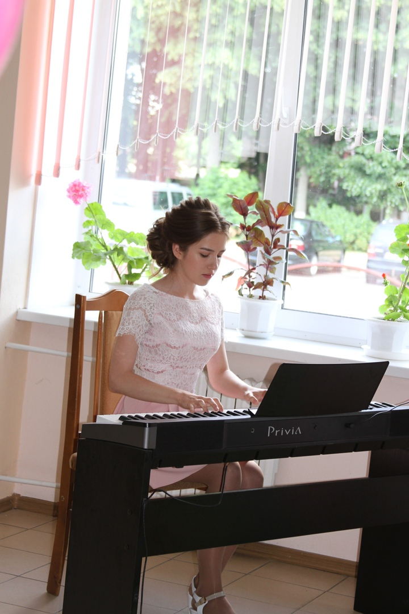
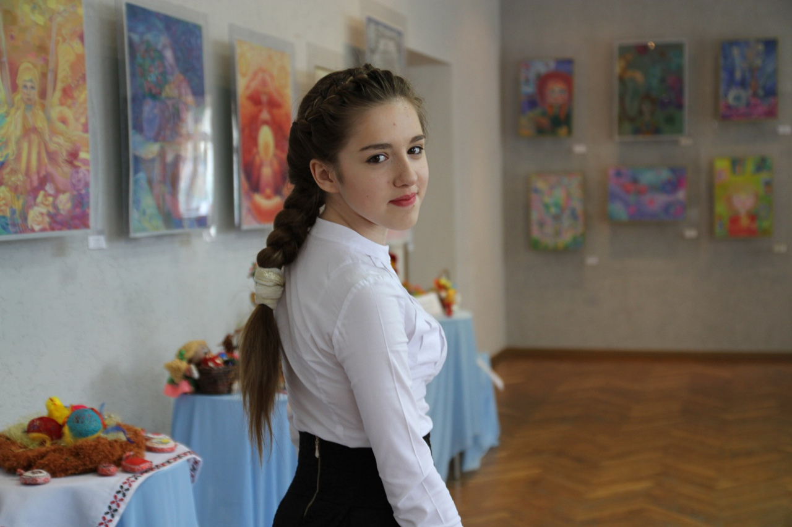
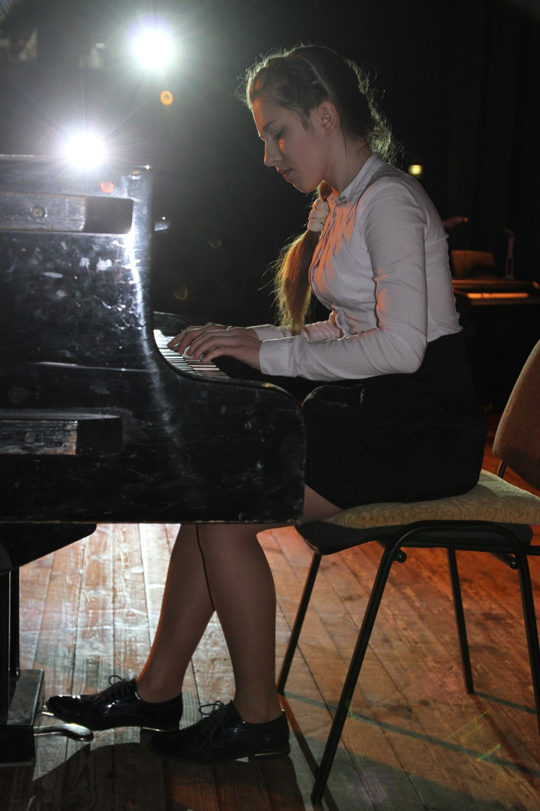

О Кате
В 2020 году Катя закончила Несвижскую гимназию.
Если говорить про школьную жизнь, то она была насыщенной и интересной.
Тогда и до сих пор ей нравилось учиться чему-то новому, она неравнодушна к любым знаниям.

Кате всегда нравилось ездить в г. Солигорск на олимпиады по русскому языку,
участвовать в командных играх по Что? Где? Когда? и прочих турнирах.
Катя с самого раннего детства хотела учиться в музыкальной школе.
И в 2018 году закончила Несвижскую детскую школу искусств по фортепианному отделению.
Там ей тоже приносило удовольствие участие в конкурсах, как сольно, так и в ансамбле цимбалистов.
И этот период повлиял на Катино мировоззрение в дальнейшем.
Сейчас любит любое проявление искусства либо культуры в жизни.



Вместе учимся, преодолеваем трудности, развиваемся, расширяем кругозор, практикуем навыки и становимся лучше.
Так как смысл есть в самосовершенствовании (и в соблюдении моральных норм).
В любых ситуациях человек должен оставаться человеком. Без морали в голове человек – не человек.